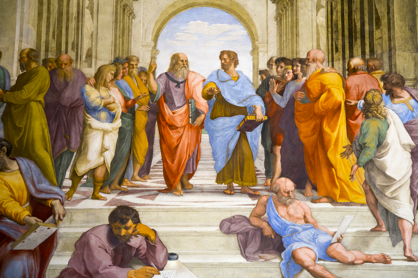
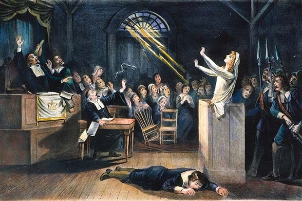

-
Shamanism
10000+ BCEOne of the world’s oldest religions that dates back to the paleolithic era. Shamans operate as liaisons between the natural and supernatural world and have defined traditional medicine in Asia and South America with their use of herbal, natural remedies.
-
Homer’s Odyssey
725-675 BCEGreek poem that gives insight into ancient Greek medicine with its references to medicine, characterizing the healer as what would be known today as an apothecary or surgeon.

-
Plato
428-347 BCEPlato was a Greek philosopher and a strong proponent of using observation and rational thought to guide the pursuit of knowledge. His ideas laid the foundation for the Scientific Method and modern scientific inquiry.
 -
Hellenistic Medical Schools
3rd-1st Century BCESeveral medical schools of thought emerged during this period, most notably the Hippocratic school. Guided by natural observation, members of these Hellenistic medical schools reasoned that disease was the consequence of invisible, unseen forces.
-
Galen
129-216 ADGalen was a greek physician who is famous for his theory of four bodily humors.
-
The Black Death begins
1346The Black Death was one of the most devastating pandemics in history, having a profound impact on the development and practice of medicine in Europe.

-
The Invention of the Printing Press
1440 ADJohannes Gutenberg revolutionized the printing industry with his invention of the printing press, a tool that would be instrumental in the proliferation of knowledge for centuries to come.
-
Herbarius latinus [Dutch] Kruydboek
1484This book not only signals the growth of botany and hermalism in traditional medicine, but it also underscores the role that the printing press played in the dissemination of medical knowledge during this time.
-
Hortis Sanitatis
1491Published by Jacob Meydenbach, this book highlights the use of plants in traditional medicine. This book also reflects the rise of botany and herbalism in this era.
-
Discovery of the New World
1492Christopher Columbus’s discovery of the New World denoted a new era of exploration and discovery, both of which had profound impacts on the development of science and medicine.

-
Secreta mulierum et virorum
1493Another book that reflects the reflects how the printing press fueled the dissemination of natural, medical remedies.
-
Practica dicta Lilium medicine
1496This book was one of 15th century’s most influential medical texts. It captures the success of the printing press in the proliferation of information and medical knowledge, particularly in using natural or alternative remedies to treat medicine.
-
Establishment of the Royal College of Physicians in London
1518The Royal College of Physicians was established by a Royal Charter and regulated the study, instruction, and practice of physicians in England.
-
Smallpox arrives to the New World
1520Smallpox was brought by the Spanish to the New World on their ships. This disease devastated the continent, as indigenous people had never experienced smallpox, measles, or the flu before.
-
De Naturali Parte Medicinae
1542In this work published by Jean Fernel, a prominent physician during the Renaissance, he coins the term physiology, a field of natural study that continues to shape the way that medicine is understood today.
-
A most excellent and perfecte homish apothecarye
1561This book is a translation of one of the works of Hieronymus Brunschwig, a German physician, botanist, and alchemist. This book is significant because it showed how the printing press made medical knowledge more accessible through translation. People who were unable to read German now had Brunschwig’s insights available to them.
-
Vivae imagines partium corporis humani aereis formis expressae
1566This book highlights the anatomical revolution that Andreas Vesalius spearheaded.
-
Invention of the Compound Microscope
1585Zacharias Jensen’s invention would push the bounds of scientific inquiry forever, laying the foundation for Robert Hooke to discover microscopic organisms in the mid 17th century.
-
The Worshipful Guild of Apothecaries is established
1617The Apothecaries Guild is important because they regulate the study, instruction, and practice of apothecaries in England. This group was established by a royal charter from King James I.
-
Discovery of blood circulation
1628William Harvey was a physician and anatomist who used empirical observation and experimentation to broaden the field of medicine with his discovery of blood circulation.
-
Establishment of The Royal Society of London
1660The Royal Society of London was one of the first scientific societies, emphasizing the importance of scientific research, observation, and experimentation.
-
Heel-konstige aenmerckingen betreffende de gebreekken der vrouwen
1663This book reflects the incorporation of experimentation and observation into medicine.
-
Experimental philosophy
1664This book highlights the incorporation of experimentation and observation into medicine, a technique that would lead Robert Hooke to discover the existence of microscopic organisms in the following year.
-
Les Secrets de la Medecine des Chinois
1671This book is really interesting because it illustrates the role that the exchange of knowledge between the Western World and China. It highlights the differences and similarities between the medical systems in the two places, contributing to a more comprehensive, collective understanding of medicine.
-
Salem Witch Trials
169319 people found guilty of practicing witchcraft are hanged.
